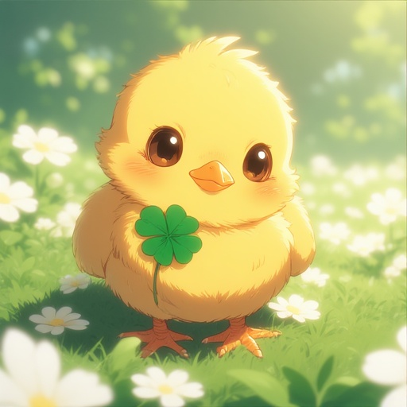

ABYSSAL INTELLIGENCE
The Rococo Exhibition in the Deep

말하는 병아리
Made by perchance

안정형 씨
Made by perchance

말차하임 광고 이미지
Made by SEAART.AI
COMMERCIAL FILM
말차하임 광고 - Commercial
DOCUMENT
GOOGLE DOC 바로가기
이력서/소개서 문서를 바로 열 수 있어요.
OPEN DOCUMENT →문서 링크 - Google Docs